Before you begin
- Complete The Forbidden Path and The Will of the World; reach Fate in Haze.
Starting point
Dhea Prandoleh · Windurst Waters [S] · H-10
Walkthrough
- Speak to Dhea Prandoleh, then Velda-Galda (K-9).
- In Fort Karugo-Narugo [S]’s outside area, examine the Stone Monument (E-7), then the Succulent Cactus (F-5) for a Succulent dragon fruit. Return to the monument.
- Examine the Sunken Hollow (G-7) for a cutscene, then again to enter Ghoyu’s Reverie.
- Escort both Nhev Befrathi and Syu Befrathi to the exit at G-9 on map 2, proceeding through the first map’s F-9 passage. Talk to each to start or pause movement.
- Clear enemies ahead and keep mother and daughter together. Syu runs away from nearby enemies and when separated too far from Nhev. Bring both to the exit.
- After returning to West Sarutabaruta [S], enter Windurst Waters [S] for completion.
Battle and progress notes
- After failure, obtain another fruit from the cactus on the following Vana’diel day.
Completion and reward
Kitty Rod.
What this opens
Area maps
Open a zone below, then select a map to enlarge it. Match the named floors and grid coordinates in the steps; these are reference area maps, not a live position tracker.
Windurst Waters (S)

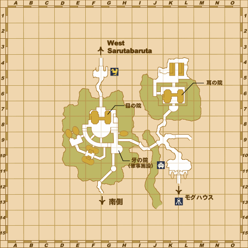

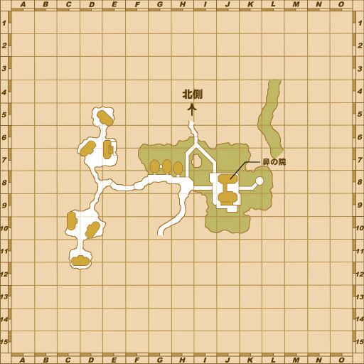
Fort Karugo-Narugo (S)

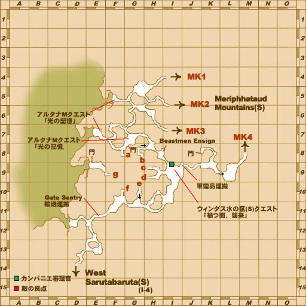

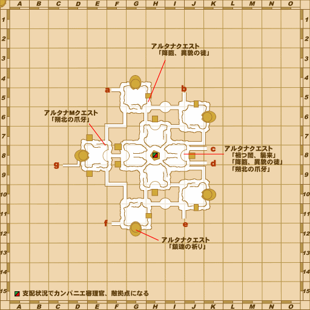
Ghoyu's Reverie

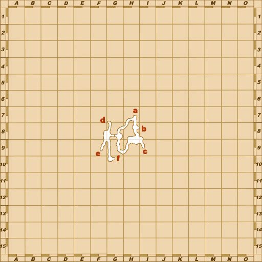

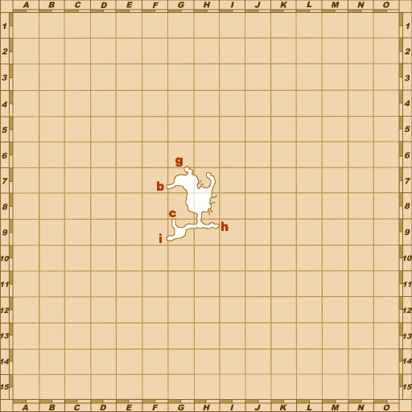

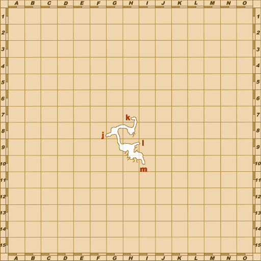

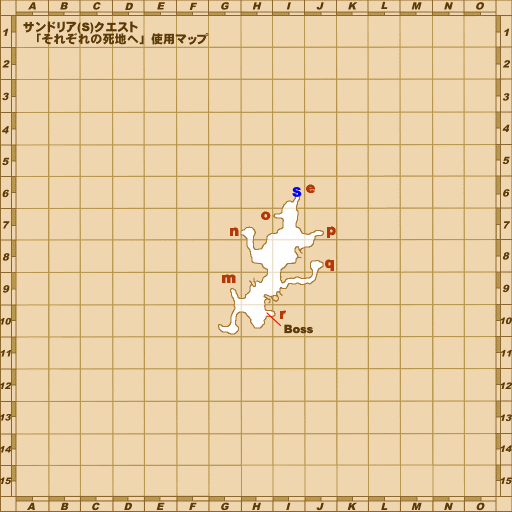

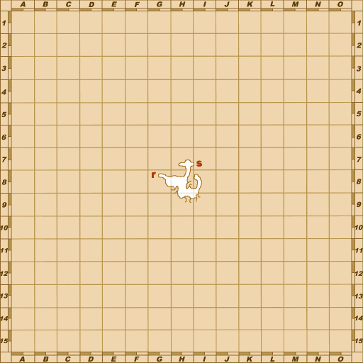

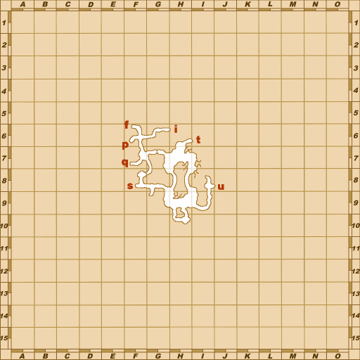

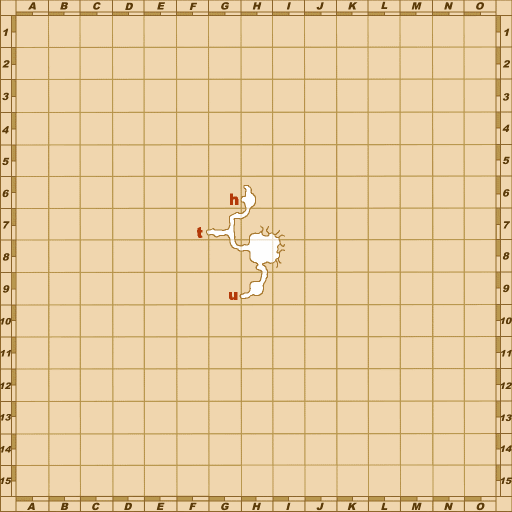

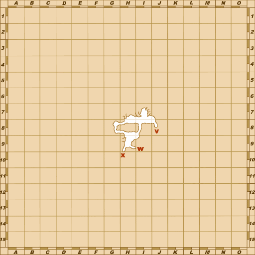

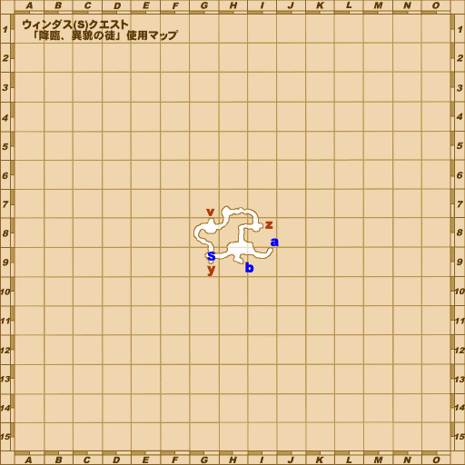

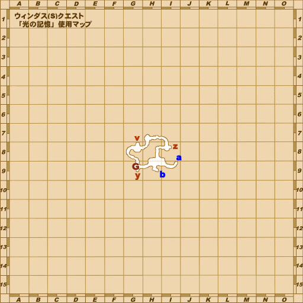

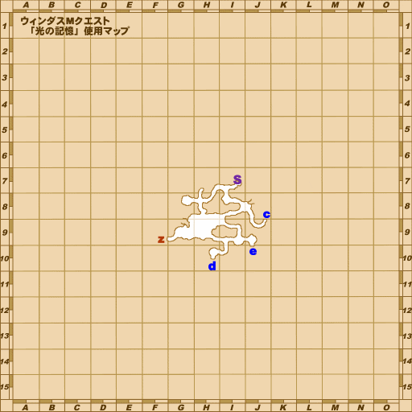

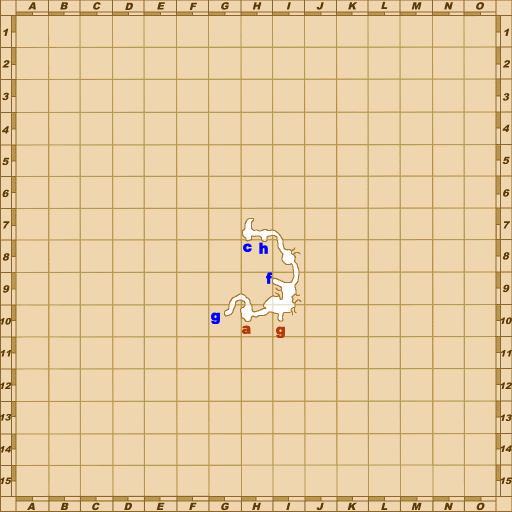

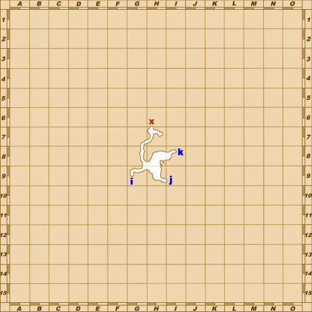

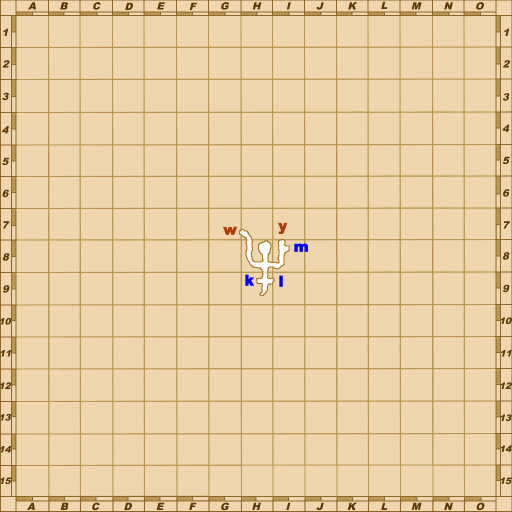

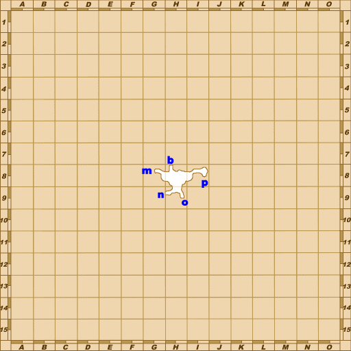

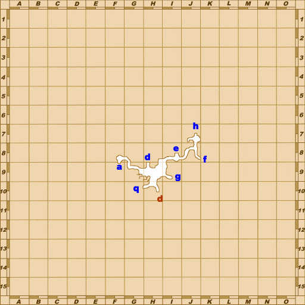

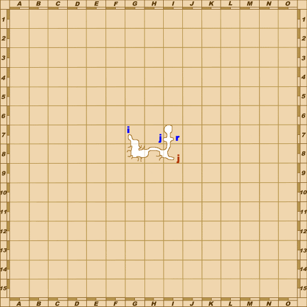

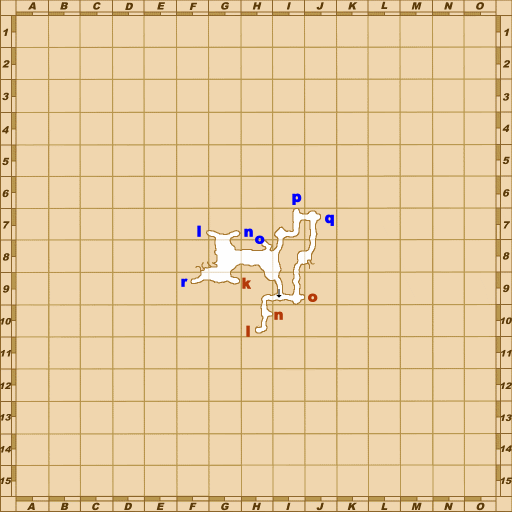
West Sarutabaruta (S)

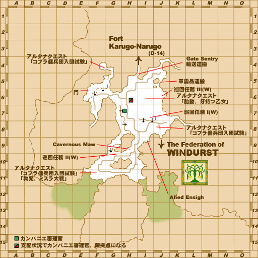
Zone guides
References
- BG Wiki — Sins of the Mothers
- Reviewed mission implementation
- Reviewed mission implementation
- Reviewed mission implementation
- Reviewed mission implementation
- Reviewed mission implementation
Steps are an original summary of the linked walkthrough and reviewed source. Other servers’ bonus rewards are not included. How to read requirements, waits and battlefield notes.